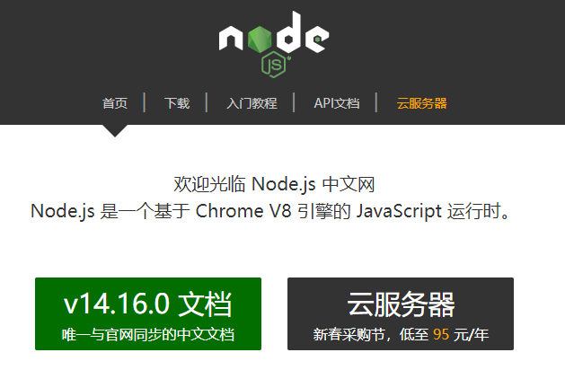

环境：
1.git
Windows：下载并安装 git.
Mac：使用 Homebrew, MacPorts 或者下载 安装程序。
Linux (Ubuntu, Debian)：
1 | sudo apt-get install git-core |
Linux (Fedora, Red Hat, CentOS)：
1 | sudo yum install git-core |
2.node.js
提供npm管理包 （注意安装时要勾选添加到环境变量，可以自己去环境变量检查一下，window10在我的电脑，右键属性，高级系统设置，环境变量）
Windows：通过 nvs（推荐）或者nvm 安装。链接node.js
Mac：使用 Homebrew 或 MacPorts 安装。
Linux（DEB/RPM-based）：从 NodeSource 安装。
其它：使用相应的软件包管理器进行安装，可以参考由 Node.js 提供的 指导

配置和部署
3.配置hexo:
3.1 有了git和node.js以后,就可以安装hexo. 新建一个hexo文件夹，下载hexo包
1
$ npm install -g hexo-cli
3.2 安装以后，可以使用以下两种方式执行 Hexo：
3.2.1 Windows用户只能通过：npx hexo
3.2.2 Linux用户可以将 Hexo 所在的目录下的 node_modules 添加到环境变量之中即可直接使用 hexo
1
echo 'PATH="$PATH:./node_modules/.bin"' >> ~/.profile
3.3 新建一个blog文件夹，输入命令npx hexo init, 或者直接 npx hexo blog， 会直接新建一个blog文件夹
3.4 新建一篇文章 hexo n”xxx”
3.5 hexo clean 清除缓存，这里会删掉之前的public文件夹
3.6 hexo g 生成一下本地文件，类似于git commit提交本地库
3.7 hexo s 本地运行博客，通过 localhost:4000 访问
4.部署
4.1 部署到github,先安装一个插件,确保当前目录在blog下因为没有-g选项
1
npm install hexo-deployer-git --save
4.2 打开/blog/_config.yml 添加git配置
1
2
3
4deploy:
type: 'git'
repo: 'https://github.com/WAVEYUHAITAO/WAVEYUHAITAO.github.io.git' #这里填上github仓库的https地址
branch: master
4.3 hexo clean 清除缓存，这里会删掉之前的public文件夹
4.4 hexo g 生成静态页面，每次修改上传前都要生成一下，生成public文件
4.5 hexo d 将public文件夹上传到github repo下的master branch
主题更改
5.克隆主题到本地themes文件夹
5.1 去到hexo官网主题页面
5.2 选择主题,并进入相应主题github页面
5.3 克隆主题到本地themes文件下,例如:
1 | git clone https://github.com/geektutu/hexo-theme-geektutu.git themes/xxx" |
5.4 更改_config.yml里的theme属性,设置为上一步的文件名xxx
5.5 遵循步骤4.3~4.5,执行部署.
Author: Whalestock
Copyright: All articles in this blog are licensed under CC BY-NC-SA 3.0 unless stating additionally.